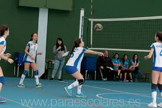

Son las que pretenden introducir al bachiller en la riqueza de las experiencias que conlleva cualquier manifestación del arte y de la cultura, con el propósito de despertar su sensibilidad, no sólo hacia este tipo de experiencias, sino también a aquellos aspectos que conforman su mundo interior y su mundo social, ya que la cultura y el arte constituyen la representación de los rasgos y aspiraciones distintivas de una sociedad.
DANZA
Danza es una para-escolar que se lleva la cuál nos desestreza y nos ayuda a desarrollar ciertas habilidades que quizá desconocemos de nosotros mismos, esta se basa en el folklor y bailes típicos de nuestra región y quizá nuestro país.
FUTBOL
La recepciòn debe ser la primer habilidad que debe aprender un futbolista porque es la base sobre la cual se construye todo lo demàs. Significa recibir el balón con un contacto del pie o alguna otra parte del cuerpo permitida por el reglamento, que facilite la siguiente acción técnica.GOLPEO: Se refiere a dar pase a un compañero de equipo con el propósito de dejarlo en ventaja para la siguiente jugada: tirar a gol o rematar a la portería rival, que es la finalidad del futbol (meter gol).
BASQUETBOL
Desarrolla múltiples habilidades, desde equilibrio, concentración y autocontrol, hasta confianza y rapidez de ejecución, lo que aporta diversos beneficios al organismo, así que practicarlo puede ser tan divertido como saludable.

VOLEYVOL
Coloca un gran número de demandas en las habilidades técnicas y físicas de un jugador. Estas habilidades requieren flexibilidad, equilibrio, fuerza superior e inferior del cuerpo y la velocidad con el fin de reproducir de manera efectiva. Requiere que los compañeros de equipo trabajen cooperativamente, ya un ritmo rápido. Habilidades de liderazgo y cooperación.Puede mejorar su confianza en sí mismo, la autoestima, la imagen de su cuerpo hace que se sienta más feliz sobre la vida en general.
TEATRO
El teatro es una interacción actoral entre varios individuos que representan una historia frente a los ojos del público, estos deben ser sumamente emotivos, todas las emociones deben ser totalmente marcadas así como también el momento de pasar de una emoción a otra, por tal razón la preparación otorgada a cada actor debe ser exhaustiva para que así se aprenda a proyectar todo lo actuado de forma creativa y eficaz, la meta de toda obra de teatro es despertar emociones en su público espectador. Para poder representar una obra se necesita un libreto, a las personas dedicadas a la escritura de estas obras teatrales se le otorga el nombre de dramaturgos.
MUSICA
Seguridad: Les da seguridad emocional, confianza, porque se sienten comprendidos al compartir canciones Aprendizaje Concentración Expresión corporal contribuyendo de esta forma a la potenciación del control rítmico de su cuerpo. puede mejorar su coordinación y combinar una serie de conductas.
BANDA DE GUERRA
La banda de guerra son un conjunto de personas que desempeñan la labor de realizar los toques y marchas militares. Cada toque militar tiene un significado particular, comúnmente significan órdenes. A aquellos que participan en una banda de guerra se les conoce como banderos. Se integran por tambores y cornetas. Tiene como objetivo fomentar y rendir honores a los símbolos patrios de nuestro país. Sirve para elevar el nivel físico, funcional y moral hacia nuestros símbolos patrios, además de tener un alto nivel competitivo para concursos, desfiles, exhibiciones, inauguraciones de eventos deportivos y homenajes.
ESCOLTA
instituciones educativas y que tiene como objetivo principal formar a los estudiantes en habilidades y valores relacionados con la disciplina, la responsabilidad, el liderazgo y el trabajo en equipo. Esta actividad suele estar dirigida por un instructor que es responsable de entrenar a los estudiantes en el protocolo y el ceremonial de la escolta, así como en las técnicas básicas de marcha y de formación.
Entre los beneficios que ofrece el paraescolar de escolta para los estudiantes se encuentran:
Desarrollo de habilidades físicas: La práctica constante de la escolta ayuda a los estudiantes a desarrollar habilidades físicas como la resistencia, la fuerza y la coordinación motora.
Fomento de valores: La disciplina, la responsabilidad, el respeto, la puntualidad y el trabajo en equipo son algunos de los valores que se promueven en el paraescolar de escolta. Estos valores son esenciales para el desarrollo personal y profesional de los estudiantes.